Stolarijaza četiri zidavašeg doma.
Najmodernijom tehnologijom i širokom ponudom ALU, PVC i drvene stolarije izrađujemo sve vrste vrata, prozora i fasada. Energoplast d.o.o. sa sjedištem u Osijeku radi u zemlji i inozemstvu od 2012. godine.
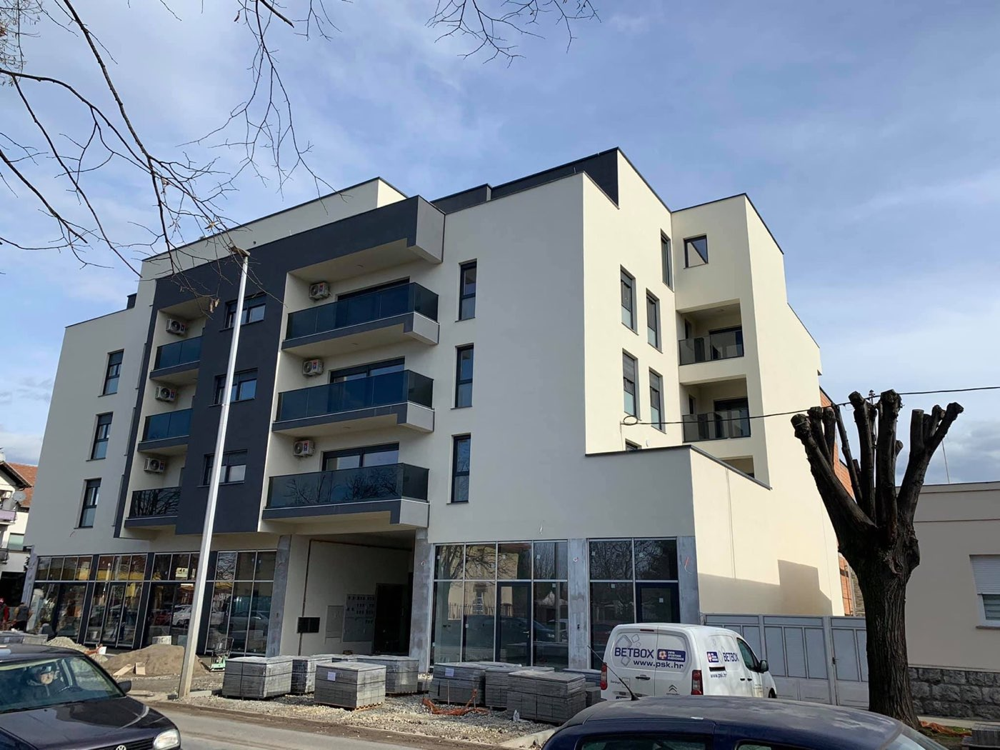
Jedan proizvođač, tri vrste stolarije.
Prozori, vrata, podizno-klizne stijene i fasade. Odaberite materijal prema objektu: od zamjene prozora u stanu do velikih staklenih stijena i pasivne kuće.
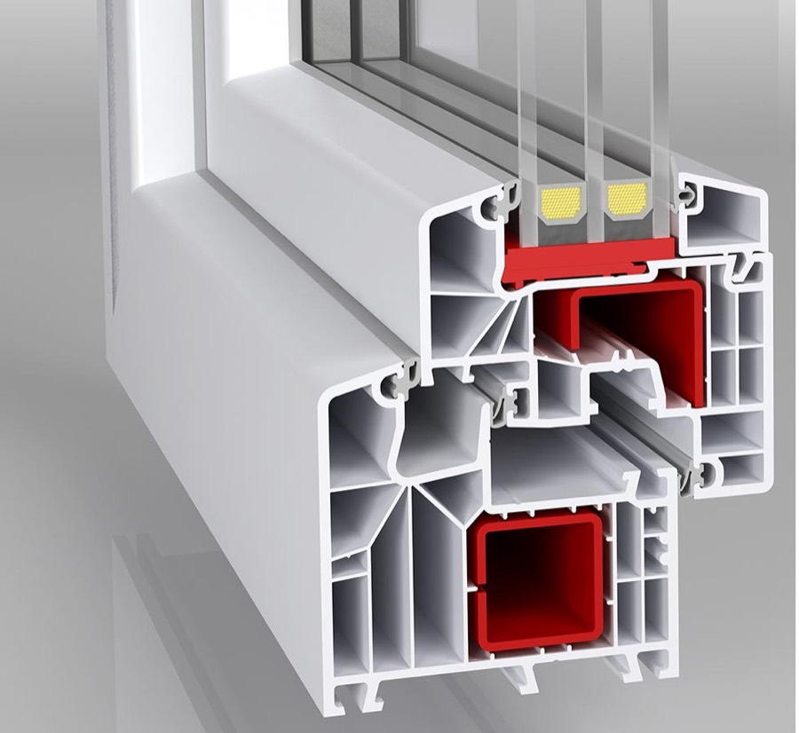
PVC stolarija
Prozori vrhunske kvalitete i vrlo prihvatljive cijene, posebno pogodni za ugradnju u postojeće objekte.
ID-4000 · ID-5000 · ID-7000 · ID-8000 CL · energeto · HST 85 · ALU SKIN PVC sustavi 02 — ALU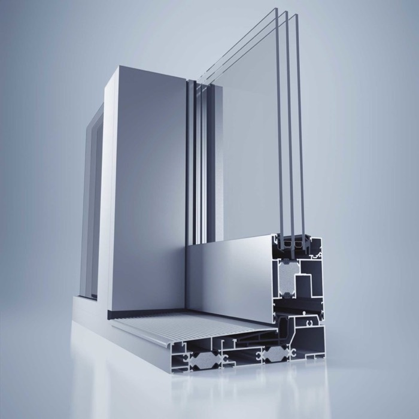
ALU stolarija i fasade
Zbog odličnih karakteristika aluminijskih profila sve češći izbor arhitekata: lagana, čvrsta i u bilo kojoj RAL boji.
Heroal D65 · W65 · D72 · W72 · D92 · HSS 57 · HSS 77 · HSS 77 SL ALU sustavi 03 — DRVO-ALU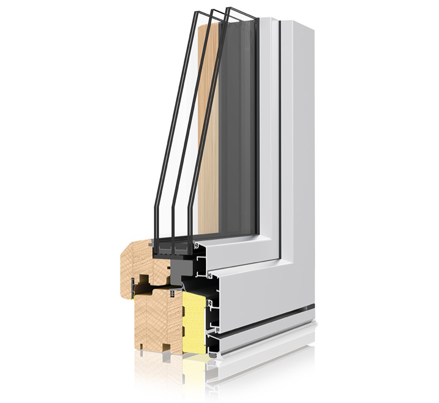
Drvo i aluminij
Iznutra drvo, izvana aluminij. Sustav UNI_ONE postiže toplinsku izolaciju potrebnu za pasivne kuće.
UNI_ONE Complanare · Termoscudo · HSS_ZERO Drvo-alu sustavi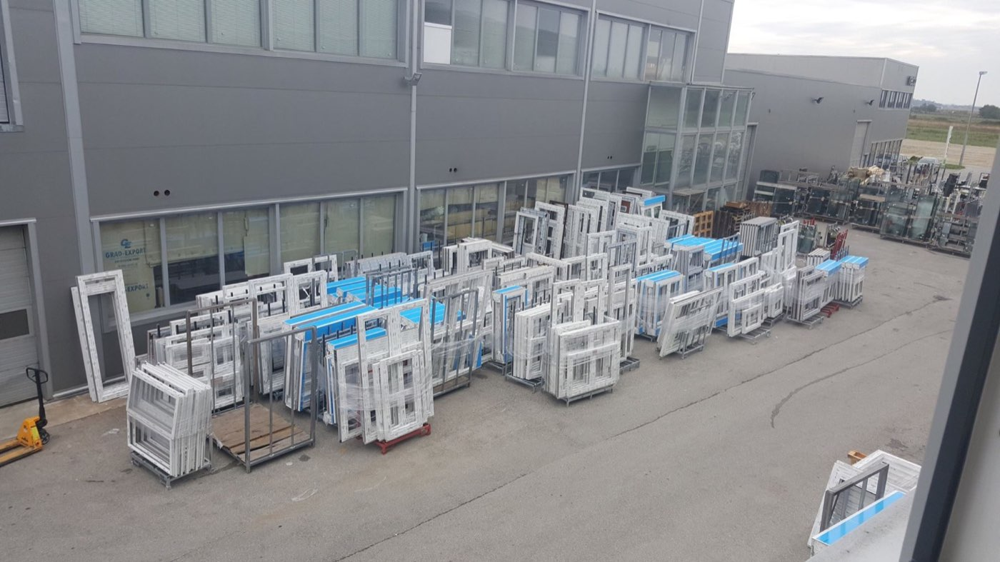
Od profila do ugradnje.
Energoplast d.o.o. osnovan je 2012. godine, sa sjedištem u Osijeku, i dugi niz godina posluje u zemlji i inozemstvu. Imamo razne reference koje pokazuju našu vrijednost i sigurnost pri naručenom radu.
- 01PVC profili Aluplast: od osnovnog IDEAL 4000 do niskoenergetskih IDEAL 8000 i energeto.
- 02Aluminijski profili renomiranog proizvođača Heroal, za prozore, vrata, klizne i harmo stijene, grilje i fasade.
- 03Drvo-aluminijski sustav UNI_ONE za niskoenergetske i pasivne objekte.
- 04Rolete, komarnici, žaluzine i okovi uz stolariju, iz iste ruke.
Iz naših radova.
Stambene zgrade, obiteljske kuće, poslovni objekti i hale. Fotografije su s gradilišta i završenih objekata na kojima je Energoplast radio.
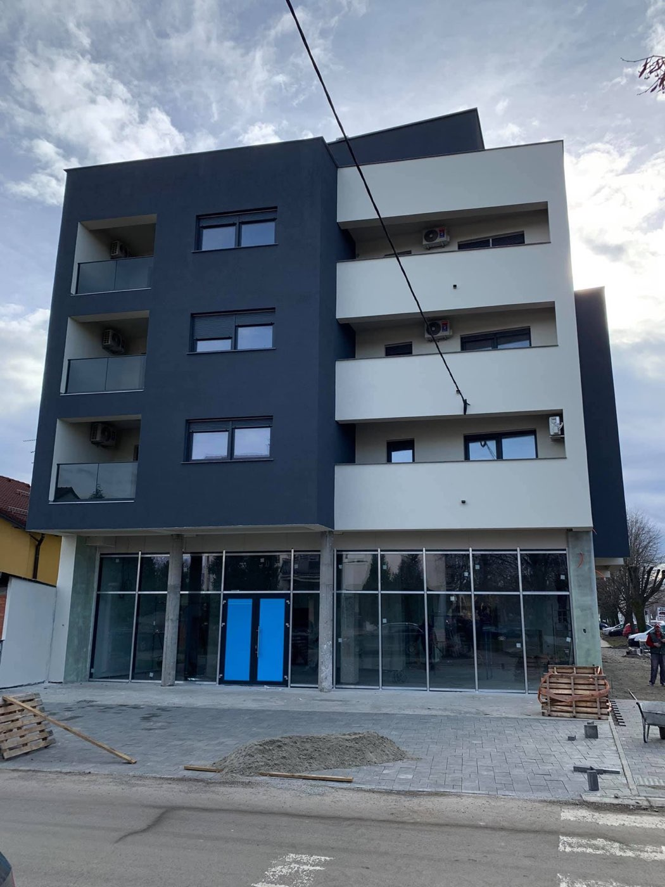
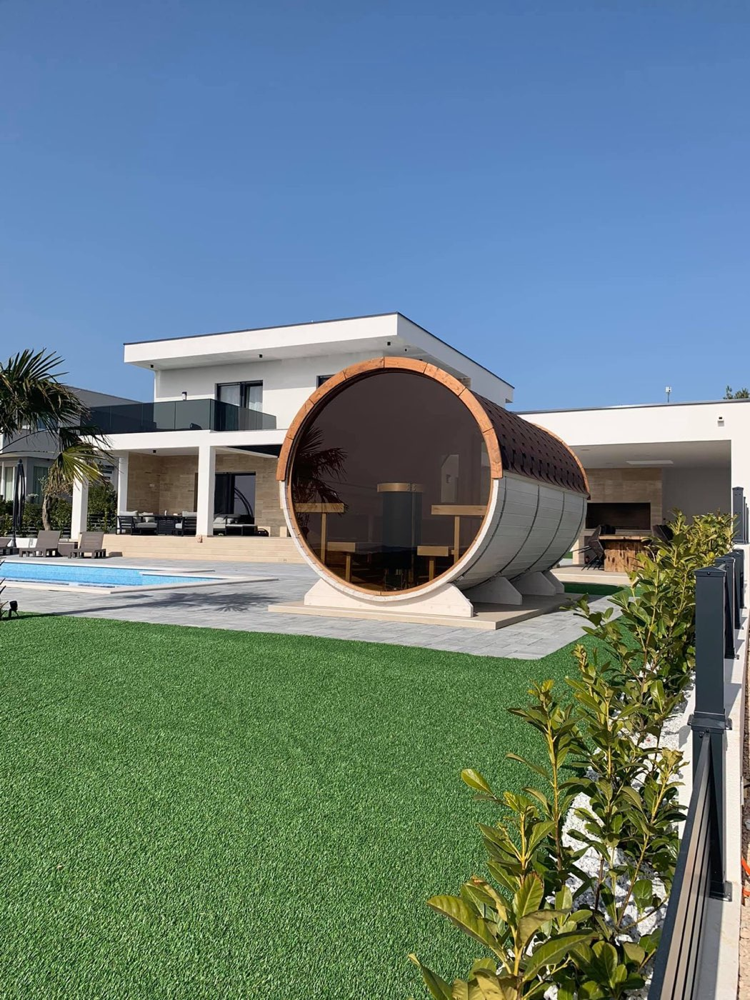
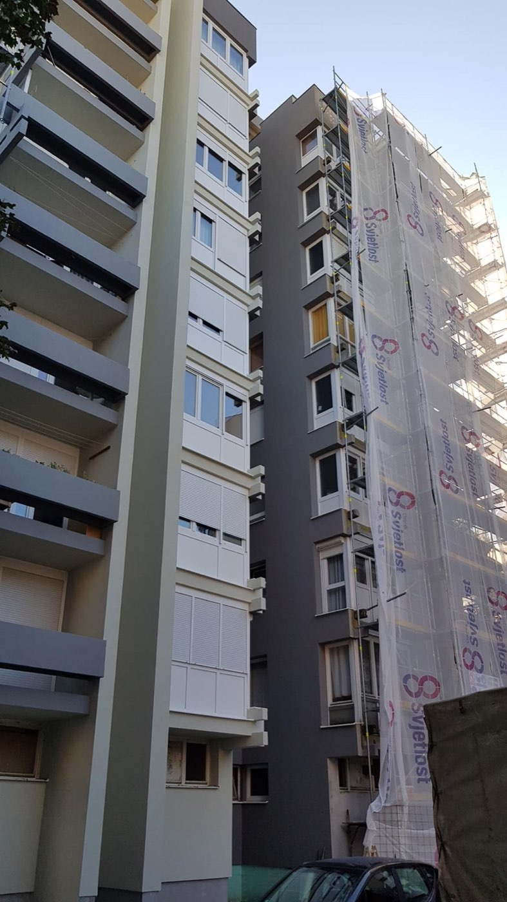
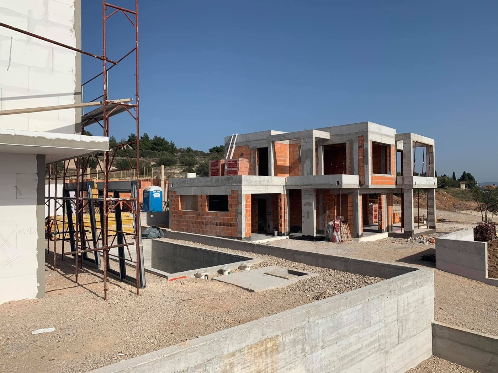

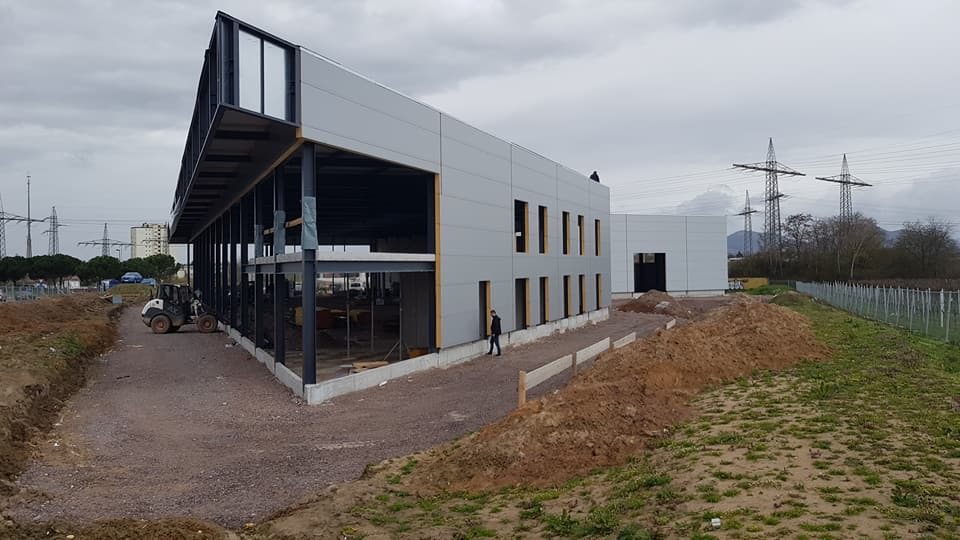
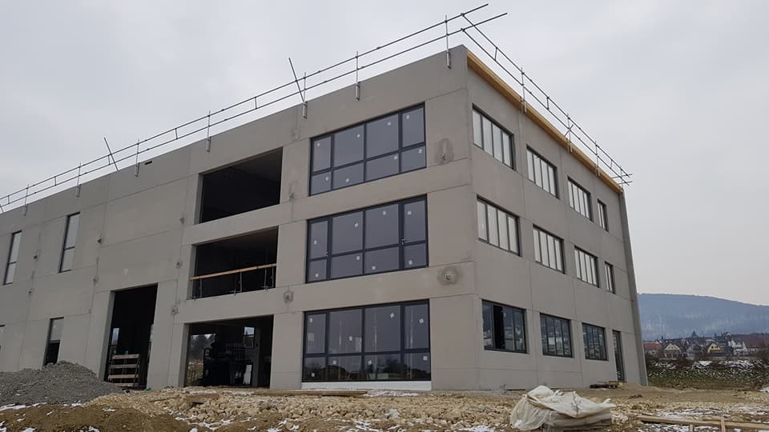
Rolete, komarnici, žaluzine.
Sjenila i zaštita od insekata izrađuju se po mjeri, u skladu s prozorima i vratima. Sve o dodacima →
Komarnici
Fiksni, rolo, klizni i zaokretni. Mreža od staklenog vlakna otporna je na sve vremenske prilike.
Rolete
Nadgradne PVC kutije ili vanjske ALU rolete, na gurtnu, kurblu ili elektromotor.
Žaluzine
Unutarnje i vanjske aluminijske žaluzine, s regulacijom svjetla od najsvjetlijeg do najtamnijeg.
Okovi
Poluolive, kvake i rukohvati u PVC, ALU i inox izvedbi, u nekoliko boja.
Javite nam se danas.
Saznajte više o našim proizvodima, zatražite ponudu ili samo dođite do željenih informacija.
- Telefon099 8036 824
- E-mailmario.ljulj@gmail.com
- Radno vrijemePon – pet 8 – 20 h · subota i nedjelja zatvoreno
Prije nego nazovete.
Kratki odgovori na pitanja o materijalima, bojama i dodacima.